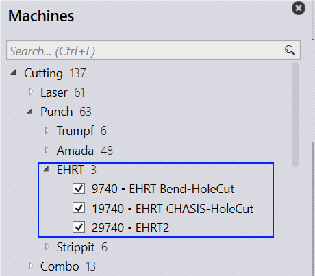
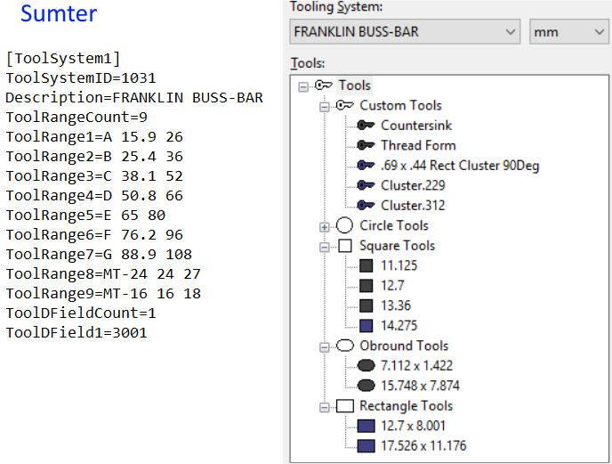
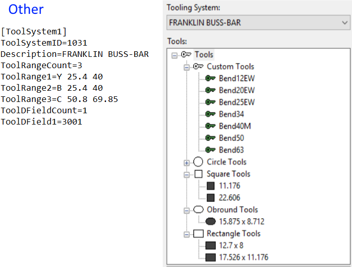

Three EHRT machines have been added in Praxis.

All these machines use same tool – system, 1031 (Franklin BUSS – BAR). The tool – system definition and tool – list in the library is different in both these config. To retain the tool data for the majority, we use tool data from Sumter config. 9740 turret and tool list will have to be fixed manually.
● The tool system INI data from two configs are different. Merge them to a company toolsys INI.
● The tool lists in both the config are different. They need to be merged or adapted.

